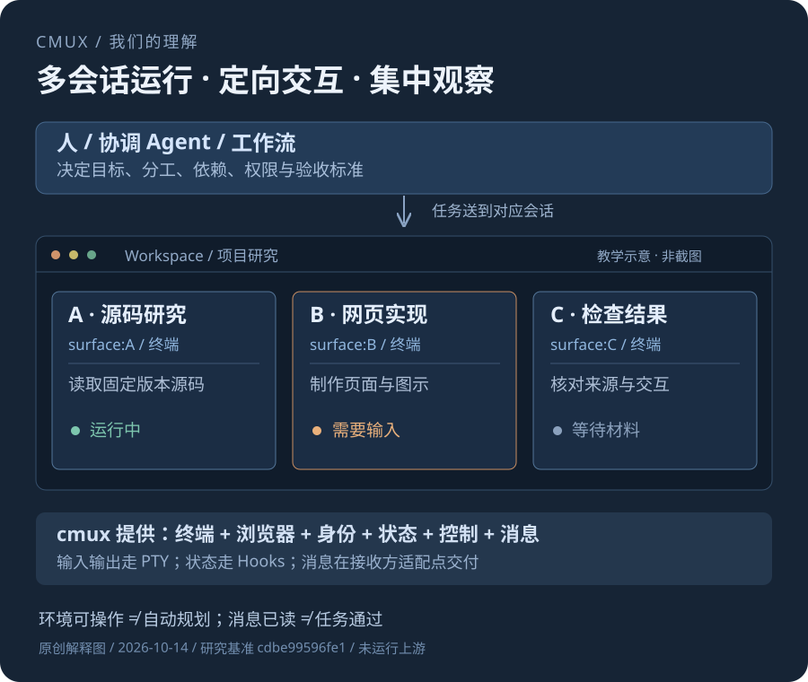
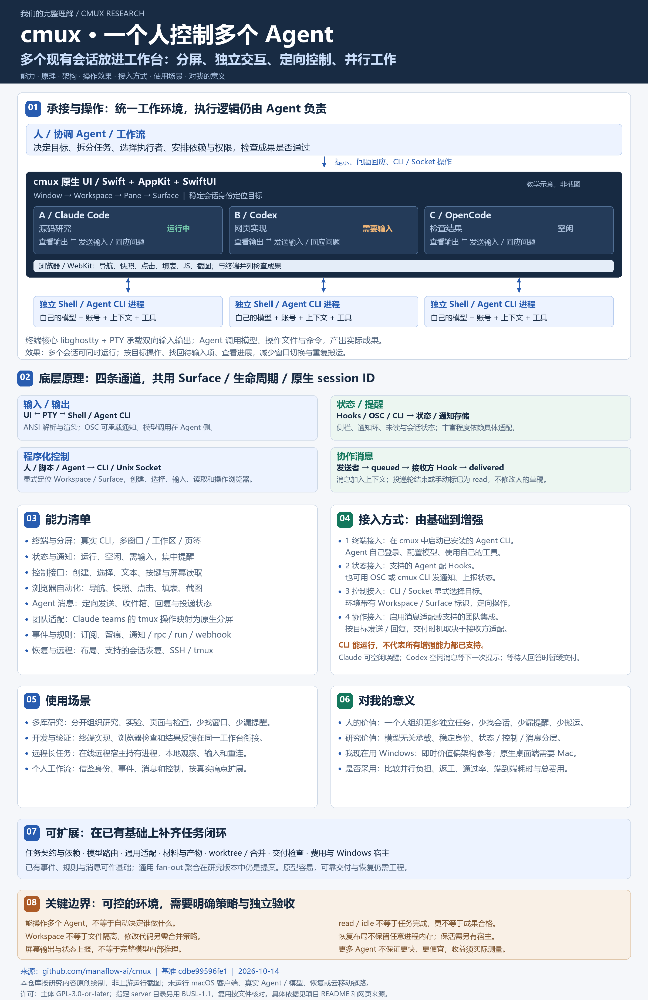
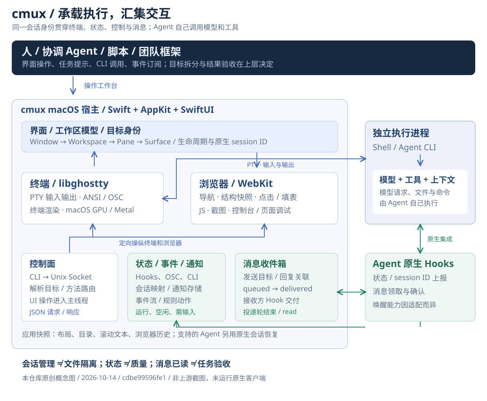

人 / 协调 Agent / 规则
确定目标、拆分任务、选择执行者、设置权限与验收标准，决定失败后怎样重试。
承接已有工具，让一个人组织并行工作
cmux 把多个现有 Agent 会话放进一个工作台，分屏展示、独立交互、定向控制，让它们并行工作。你可以在其他任务执行时，给指定会话发提示、回应问题、查看结果；每个 Agent 仍使用自己的模型、工具和上下文。
cdbe99596fe1
图中汇集能力、架构、四条交互路径、操作效果、接入方式、场景、个人价值和扩展边界。点击查看原图，放大阅读。

我们的核心理解
本质就是把多个现有 Agent 会话放进一个工作台，分屏展示、独立交互、定向控制，让它们并行工作，实现一个人同时管理和控制多个 Agent。分屏让会话可见，输入与控制让会话可操作，状态和提醒帮助人及时回应。
“同时控制”指管理多个并行运行的会话，并按目标分别交互；各会话保留独立上下文。让它们合作完成一个目标，还需要人、协调 Agent 或规则明确分工、依赖和验收。
确定目标、拆分任务、选择执行者、设置权限与验收标准，决定失败后怎样重试。
提供终端、浏览器、工作区、会话定位、状态、通知、控制 API 与消息投递。
Agent 调用模型，读写文件、执行命令、使用工具，保留自己的原生会话与上下文。
依据：README 与产品定位 [01]、控制 API [02]、Agent messages [04]。
接近，但还包含真实输入、控制和浏览器操作。终端显示的是 Agent 的输出；Hooks 提供的是运行、空闲、需输入等状态。它不会自动看到模型全部内部推理，也不能从状态推导成果质量或真实完成百分比。
可以作为第一层理解。但一个 Workspace 能容纳多个 Agent；接收对象主要定位到 Surface。cmux 提供“把任务送到谁”的机制，“为什么选它、任务怎么拆”需要人、已有团队框架或上层策略。
演示版可以很轻：起几个进程、接收输出、展示状态、定向发消息。完整产品还要处理终端协议、输入草稿、进程重启、会话绑定、消息重试、线程与性能、状态恢复和 Agent 差异。后文逐项解释。
先看效果，再看实现
下面是可操作的教学模拟，没有启动 Agent，也没有连接模型。点击会话、定位待输入项、发送模拟输入，观察工作台如何把“多个窗口”变成“可定位的工作”。
直接操作：选择终端后键入文字、提交提示、回应 Agent 的问题。CLI 也可定向发送文本或按键。
协作消息：另有消息存储与 Hook 投递机制，避免把队友消息直接打进人尚未写完的输入框。看消息路径 →
能力按作用划分
| 能力 | 实现方式 / 实际收益 | 理解边界 |
|---|---|---|
| 真实终端与分屏 [01] [04] | 承载 Shell 和 Agent CLI；多窗口、Workspace、Pane、Surface，支持键盘输入和定向控制。支持的 Agent 会话还可切换聊天视图。 | 不是模型托管平台；Agent 仍使用自己的模型、账号、工具和上下文，聊天解析并非覆盖每种 CLI。 |
| 工作区侧栏 [01] | 集中展示目录、分支、PR、端口、通知与会话状态，帮助找回正在处理的任务。 | 目录与标签是组织信息；不会自动生成隔离工作树或解决文件冲突。 |
| Hooks 与提醒 [03] [05] | Agent 原生 Hooks、OSC 通知或 CLI 上报，显示运行 / 空闲 / 需输入及通知环、未读提醒。 | 丰富程度由 Agent 适配决定；上报百分比需有明确依据。 |
| CLI 与 Socket API [02] | 创建、选择和关闭工作区 / 分屏，发送文本与按键、读取屏幕、设置状态与进度。 | 能操纵环境不等于理解目标；调用者必须明确目标会话。 |
| 内置浏览器 [06] | WebKit 页面与终端并列；导航、结构快照、元素定位、点击、填表、JS、截图和调试信息。 | 网页可操作不等于业务正确；登录、访问条件和验证目标仍需处理。 |
| Agent 消息与收件箱 [04] | 定向投递文本、回复消息、维护 queued / delivered / read 状态，在接收方 Hook 处交付。 | 各 Agent 唤醒能力不同；read 不是任务验收通过。远程通信有范围限制。 |
| 团队集成 [07] | Claude Code teams 的 tmux 操作经兼容层映射为原生工作区和分屏；其他集成须逐一适配。 | 团队拆分与协调来自原有框架；任意 Agent CLI 不自动获得同一套团队能力。 |
| 事件与自动化 [08] [09] | 事件订阅、JSONL 留痕和规则匹配；触发通知、控制调用、命令或 Webhook，含限频及防循环。 | 框架已有；“自动判断谁最适合做任务”仍需设计业务策略。 |
| 会话恢复 [10] | 保存布局、目录、滚动文本和浏览器历史；支持的 Agent 用原生 session ID 恢复。 | 不保存任意进程内存。持续进程另需 tmux / zellij 或在线远程宿主。 |
| SSH 与移动入口 [01] | 远程终端、tmux 接入与 CLI relay；README 还描述了 iOS beta 和 Cloud 相关入口。 | 本研究聚焦本地桌面主链路；云端及移动全流程未复现。 |
显示全部 10 项能力
四条路径，共用稳定会话身份
桌面宿主以 Swift、AppKit、SwiftUI 组织界面与状态，用 libghostty 提供终端核心，用 WebKit 提供浏览器。Agent 作为独立进程运行，模型与工具调用发生在 Agent 自己的执行链中。

原创架构解释图，箭头表示概念数据流；不是上游模块依赖图。下载 SVG ↗
PTY 是“伪终端”，给 Shell / Agent 一个像真实终端的输入输出环境。键盘输入写向进程，输出字节返回终端核心；ANSI 控制序列负责颜色、光标、清屏和全屏界面，OSC 可承载通知。libghostty 解析并渲染这些内容，macOS 的图形路径使用 GPU / Metal。单纯读取日志文件无法完整承载这套交互。
对象层级是 Window → Workspace → Pane → Surface。Workspace 是侧栏工作单元，Pane 是分屏区域，Surface 是其中一个终端或浏览器页签。终端注入 CMUX_WORKSPACE_ID、CMUX_SURFACE_ID、CMUX_TERMINAL_LIFECYCLE_ID 与 CMUX_SOCKET_PATH，Hooks 再关联 Agent 原生 session ID、目录与可用的进程信息。
Surface 身份定位接收对象；生命周期标识帮助区分同一个界面里不同代的进程。会话绑定、过期事件与重启恢复比“按窗口标题找 Agent”可靠。
CLI 根据显式目标或当前环境找到本地 Unix Socket，发送包含 id / method / params 的 JSON 请求。控制协调器解析请求、解析稳定 ID / 引用并路由到应用；涉及 UI 状态的操作进入主线程，完成后返回结果。这是请求 / 响应接口，不宜笼统称为标准 JSON-RPC 2.0。
默认访问规则面向 cmux 所启动的子进程；权限与开放模式需按用途配置。浏览器操作通过同一控制面进入 WebKit，Agent 不必模拟桌面鼠标。
通知入口通过有界异步队列交给应用侧消费，再根据工作区与 Surface 更新通知存储。事件总线提供带 seq 和 boot_id 的流式订阅及有限重放；进程重启或重放出现缺口后，客户端应刷新状态快照。
自动化规则匹配事件与属性后执行动作，限制触发频率和并发，并用触发链防止规则相互无限触发。它已经提供事件框架，后续扩展应围绕具体任务规则。
保存的是版本化的应用状态与可用的 Agent 会话映射。重开时先重建布局、目录、滚动文本和浏览器历史，再按支持的 Agent 原生命令恢复会话。普通进程的内存、打开文件状态和所有工具执行现场不会自动保留。
希望 cmux 退出后进程继续运行，可以选用本地 tmux / zellij；本地宿主关机仍会中断。要跨本机离线继续执行，需要持续在线的远程机器与相应接入方案。
最容易被混为一谈的两种交互
适合提交提示、回应问题、使用 CLI 原有交互。目标是当前终端里的输入环境。
先存储，再在支持的交付点加入上下文。可以携带发送者、目标和回复关系，保护人未提交的草稿。
消息投递机制与限制：Agent messages [04]；收件箱与回复实现：AgentInboxProjection [18]。
read 表示消息所在的投递轮已经结束，或有人手动标记已读。成果仍需另行检查文件、测试和交付标准。
| 接收情况 | Claude Code | Codex |
|---|---|---|
| 空闲 | 后台 Hook 轮询，可用系统提醒唤醒。 | Hook 不能主动唤醒；等待下一次人提交提示。 |
| 正在执行 | 在下一个适配交付点看到消息。 | 在下一次提示或即将停止的 Hook 处交付；必要时继续当前轮。 |
| 等人回答 | 问题、权限或计划等待中，暂缓投递，直到人处理。 | |
| 无界面批处理 | claude -p 不接收 / 等待消息。 | codex exec 不接收 / 领取；部分仅安装 Hook 的启动方式也未覆盖。 |
消息支持定向发送、收件箱与回复，协议含 claim、短期租约和 ack，防止旧轮询器错领或重复确认。支持的会话可用聊天视图读取 Agent 原生记录：已交付消息出现在对应轮次，排队消息显示在输入区上方；这仍依赖具体适配。消息正文是有长度与控制字符限制的文本。当前 SSH 消息限同一远程会话，不能直接跨到本地 Agent；Cloud VM 消息尚未支持。以上均按固定 commit 文档记录，不能推广到所有 Agent 或所有运行方式。[04]
# 示例仅供理解，不在网页执行；先确认目标引用
cmux agent message surface:2 "接口说明已更新，请检查字段兼容性。"
cmux agent inbox发送目标可解析为 Surface / Workspace 的 ID、引用或唯一标题匹配；Workspace 最终解析到它对应的 Agent Surface。回复使用消息 ID 建立关联，CLI 和 Socket 共享这套机制。
管理、交互、展示，各司其职
cmux 让三者可见、可定位、可交互；如果它们编辑代码，需另行安排目录 / Git worktree、分支与合并规则。共享屏幕不解决共享文件冲突。
已存在的团队适配
cmux claude-teams 启用团队环境，临时 tmux 兼容层优先进入 PATH。Claude 请求创建窗口、分屏、发送按键或读取屏幕时，兼容层将命令转为 cmux 控制调用。
团队的协作逻辑仍来自 Claude Code，cmux 提供承载与适配。官方团队集成 [07]。
固定版本中的 agent-fan-out-rfc.md 标记为 proposed，提出父操作 ID、子运行记录、聚合状态和稳定重试。已有多个终端和团队适配，不等于所有独立 Agent 都已有统一任务调度系统。[19]
价值：让一个人更容易组织多个独立任务
一个 Agent 执行时，你可以在另一个会话安排其他任务；需要输入的会话通过提醒返回你的注意力。工作台把找窗口、等执行、复制信息和回应问题组织起来，提供一个人管理多个 Agent 的操作基础。
每个库一个 Workspace，研究 / 实验 / 页面各开 Surface。随时知道哪项等待你补条件，少在一堆窗口里寻找会话。
适用前提：确实同时处理多个有独立上下文的任务。终端写代码，浏览器直接查看开发页面；检查者按明确目标操作界面，并把问题反馈给实现会话。
收益来自减少人工搬运信息和切换，验证质量仍靠标准与证据。远程机器执行耗时任务，本地集中观察与回应。tmux / 持续在线宿主承担进程保活，cmux 提供接入和工作台体验。
必须明确进程由哪台机器持有，网络中断后怎样重新连接。借鉴会话身份、事件、控制与消息机制，给既有工具增加可见性、定向交互和成果检查，而后按实际痛点补调度策略。
对当前 Windows 环境，架构学习的即时价值高于直接安装价值。减少反复找会话、漏看待输入、等待任务和搬运材料，便于一个人组织多个独立任务。多项目研究、实现与检查分工、远程长任务可以按明确流程复用。
你目前在 Windows 使用 Codex，直接采用原生桌面端需要 Mac。只有单个任务或当前工具已经够用时，额外工作台的收益可能有限。
值得学的是复用现有 Agent，而后增加承载与控制层：将执行、状态、控制、消息和验收分开。你研究的模型路由判断“选谁做”，这层工作台负责“怎样承载与交互”。
更多会话会增加协调和检查负担；成果质量、总耗时、费用与返工需要用同类真实任务对比，不能由分屏数量推导。
本地判断提示，不是上游评分模型；不收集你的选择。
先观察当前工具是否已有这些能力。没有明显痛点时，保留架构参考即可。
验证价值可以记录：找会话和回应提醒的时间、漏掉的输入请求、重复搬运信息次数、返工与最终通过率，以及所有 Agent 的总耗时和费用。用同一类真实任务做对比，不用分屏数量代替效率证据。
从会话控制，逐步接成任务工作流
实现思路是复用已有 Agent CLI、模型与工具，先做好进程承载、输入输出和稳定会话定位；再把状态、提醒、控制和消息接到同一个目标；最后按真实需要增加任务契约、角色分派、隔离、失败处理和结果检查。
下表是我们的扩展判断，不代表上游已经实现。事件订阅、规则动作、消息和团队适配已经有基础，应在它们之上补具体工作流。
| 方向 | 可补什么 | 需要解决什么 |
|---|---|---|
| 任务调度 | 任务队列、依赖、角色、执行模型选择、限并发和失败升级。 | 每个任务有成果契约；防重复执行；不要在消息已读时直接判完成。 |
| 通用适配层 | 不同 CLI / SDK 的 session、状态、唤醒、恢复与消息能力声明。 | 按真实支持程度降级；保留原生权限流程；CLI 版本变化时验证。 |
| 共享材料与成果 | 研究笔记、文件链接、上下文摘要、版本与来源记录。 | 控制上下文大小、隐私、文件所有权与过期信息，不盲目广播所有输出。 |
| 代码隔离与合并 | 按任务创建 worktree / 分支，产物汇总和冲突处理。 | Workspace 不等于沙箱；多人改同一文件要有合并与检查策略。 |
| 交付检查 | 按成果运行测试、浏览器检查、证据核对和人工接受。 | 独立验收信号，保留失败与未知；检查 Agent 也可能犯错。 |
| Windows 适配 | 参考分层，用 Windows 的终端承载、进程、IPC 和浏览器组件构建类似工作台。 | 需要替换 AppKit、PTY / IPC 与图形整合；不是修改几个编译配置。 |
| 可观测与费用 | 任务级事件、时间线、重试、成本归集和回放。 | 模型用量从可信接口 / 记录获取；屏幕文本不是完整计费账本。 |
全屏界面、颜色、光标、输入法、选择与缩放，大量输出时保持响应。
多个窗口、相同标题、进程重启与复用 Surface，避免把状态或消息给错对象。
忙碌、空闲、等待人、重试与租约、过期轮询器、关闭接收后的状态。
恢复布局还是恢复进程，哪些命令可以自动运行，谁能调用控制面。
这是后续实施路线，本子项目只制作研究与教学网页，没有实现新的终端宿主或编排服务。
复用前核对许可证：本研究版本主体为 GPL-3.0-or-later；指定 server 目录另用 BUSL-1.1，生产使用（含自托管）按其声明需要商业许可。第三方组件遵循各自许可。这里引用的是上游许可证范围，实际复用按文件核对。[20]
放回我们已有的研究脉络
技能研究里出现过 cmux 的“定位 → 操作 → 观察 → 验证”方法。Intelligent Terminal 则研究终端上的 Agent 会话与辅助工作流，当时未继续采用。
cmux 当时是外部工具依赖，尚不是本次这样的完整源码研究。Multica 更靠近任务、运行记录与执行组织；Munder Difflin 更靠近团队角色、任务与 Agent 消息。它们与 cmux 的工作环境层有交集，但核心组织单位不同。
Multica 既有研究 ↗Munder Difflin 既有研究 ↗Octogent 把多 Agent、上下文文件与终端树组织为工作台；本次 cmux 重点在原生终端宿主、稳定对象身份、Hooks、Socket、消息投递与浏览器。
Octogent 既有研究 ↗历史对照来自本地既有研究记录，不是产品性能排名；目录与复现范围见本子项目 README。上述研究主要为源码与说明整理，不能当成已经验证的多 Agent 生产流程。
把结论与证据放在一起
研究基准：cdbe99596fe13784ec5ea24d2e1c720a8f67f5cb；Ghostty 子模块基准：cb1ef7091cde。源码链接固定版本；官网滚动文档在 2026-10-14 查阅，后续可能变化。